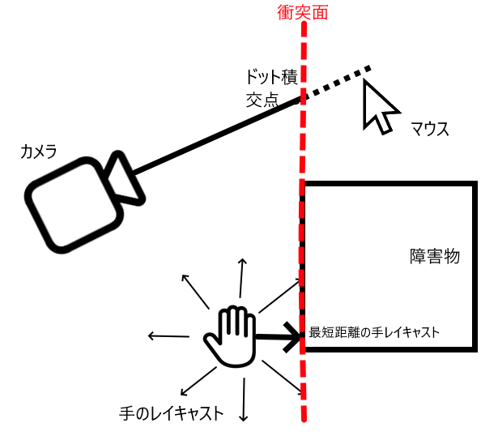
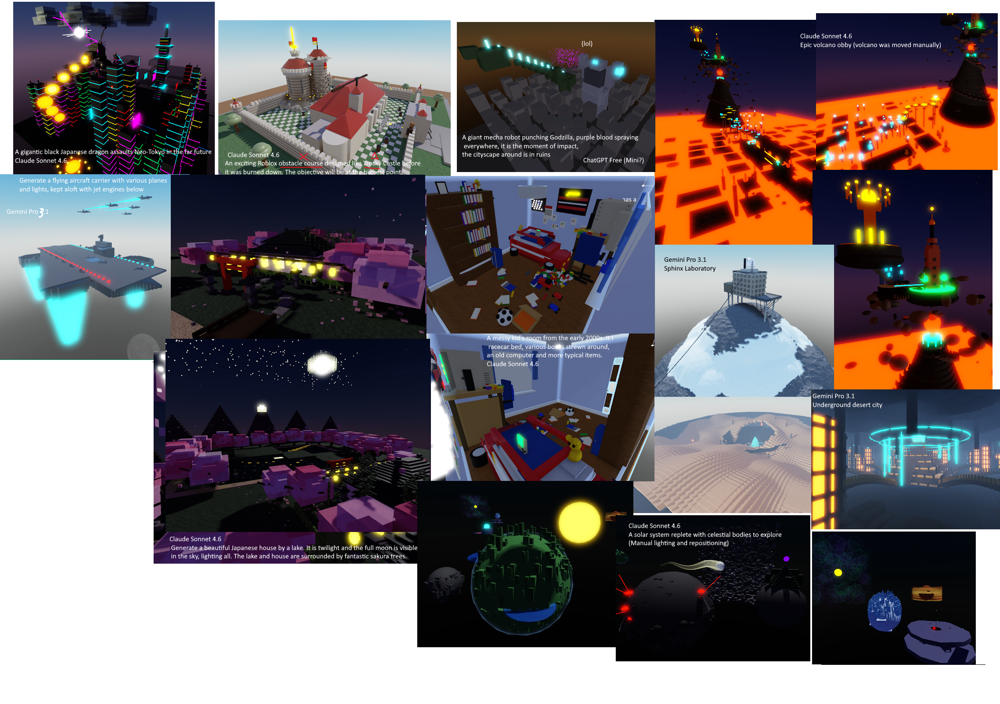
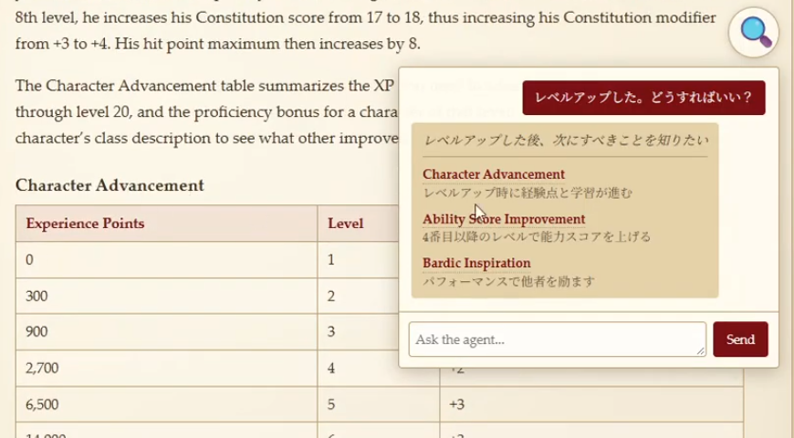

スキル
技術 / 言語
- C#
- JavaScript (ブラウザー、NodeJS)
- HTML5 / CSS
- Lua
業務・分野
- ブラウザオートメーション
- ゲームソフト制作
- ゲーム用ネットワーク技術
- 3Dグラフィックス
- 3Dアニメーション（初心者）
- 生成AIの使用
ポートフォリオ
TRPGのユーザーデータ管理アプリ
概要
Node.jsでElectronのようなフレームワークを使い、データ管理アプリを開発しました。 ウエブ技術を用いてデスクトップアプリを開発しました。 アプリ内のデータ・画像について、作者から使用許可を取得しました。
開発の課題
- JSONデータベースから読み取り、画面に表示すること
- 複雑なルールに沿って、分かりやすいUIの開発
- データセーブ・ロードの機能の実装
技術・実装
- UX・UIの考案「ソング・オブ・ソードズ」だというゲームルールが複雑なため、分かりやすさを第一に考えました。防具の計算や同時に装備できる防具が特に多い、 自動的に計算することが必要になりました。そのために、ルールブックから取った画像をクリックするだけで装備可能な防具を確認できるように実装しました。 プレイヤーへのテストも実施し、プレイヤーからのフィードバックによってUIを調整しました。例えば、「防具の名前がはっきり覚えていない」と言うフィードバックがあったのでファジー検索を実装しました。
- データセーブプレイヤーの入力したデータ配列をJSONにしました。装備がそれぞれの固有IDを持っているため、装備部位と装備の固有IDからデータキーを生成して保存できます。
- ルール正しさこのTRPGのルールが複雑なため、TRPG作者に連絡を取りました。ルールが不明な時、正確な実装をするように作者に問い合わせました。
今後の改善点
- PDFファイルからデータの取り込み自動化現在はPDFから装備データをコピーし、プログラムや外部ツールを使って登録しています。今後はPDFデータを直接取り込めるようにしたいです。
- ハードコーディングの削減追加内容やファンの変更よって、ルールが変わります。現在、装備データはJSONファイルから読み込みが装備の素材などは自動的ではありません。
- 多言語世界中のプレイヤーが使えるように、多言語のUIを実装したいです。文字列の変更は実装しませんでした。


ボルダリングゲーム
概要
宝石を拾い、柱を登るゲームです。いわゆる、縦向きの障害物コースゲームです。12月中旬にベータ版を公開しました。 マトリクス数学を使用し、プレイヤーの手がスムーズに動きながら障害物を乗り越えていくようにしました。
開発の課題
- カメラの向きを含めて、プレイヤーの手をスムーズに様々な障害物を乗り越えること。
- パフォーマンスに影響を与えず、障害物を数多く描画すること。
技術・実装
- 手の動き方手前の障害物を検出するために、手の周囲に複数の球体のレイキャストを行い、障害物の衝突面を取得します。 カメラからマウス方向の線は衝突面に沿った平面で制約されています。これにより、障害物を自然に登れるようにしました。
- 改善点この方法では凹面はうまく登れません。頂点で経路を見つけることで解決できると思います。
- カスタムLODの実装登れる障害物が多く、一気に全部をレンダーすることがパフォーマンス的に不可能です。しかし、エンジン内のLODシステムは遠距離のものを表示せず、「無限に登れる」という没入感が損なわれます。 そのためにクライアント側で4段階のLODを実装しました。500ユニット以上離れたオブジェクトはただのブロック形ですが近距離では詳細なモデルを表示します。
- 改善点高速移動の時でも、素早くロードすることを検討しています。

ブロック工場
概要
ブロックを掘り、加工して売るゲームです。 サーフェスネットを使用し、EditableMeshでボクセル構造のブロックを自由に変更することができます。 UVマップを計算することでさまざまな種類のブロックを表示できます。
開発の課題
- プレイヤーがグリッドに沿って機械を設置できるようにすること。
- ボクセル構成の立体を動的に変更し、最速にメッシュを再生成すること。
技術・実装
- グリッド設置システム自由に機械を設置することが重視だと考えています。データ保存や設置のしやすさを考慮し、3次元グリッドを実装しました。
- 改善点2次元の面に設置するのが簡単ですが、縦方向も考慮する必要があるために、階層切り替え機能も実装しましたが頻繁に「上」「下」ボタンを押す操作は不便だと感じています。 今後よりY軸方向へ設置するシステムの実装を目指しています。
- ボクセル形状の変更1つの大きなブロックは8000(20³)個のボクセルで構成されます。しかし8000のパーツはパフォーマンス面に非常に高くなります。 そのままだと、角は鋭く、自然な見た目になりません。そのために、バイナリデータとして保存しました。単一EditableMeshで描画するために、サーフェスネットを実装しました。 このように、比較的にパフォーマンス負荷が軽く、更新しやすい立方体が生成できます。 それとも、UVマップも再利用することで、テクスチャのメモリー負荷が大幅に軽減できました。
- 改善点頂点数が多くて、メモリ負荷がかなり大きいです。可能な限り、LODを実装したいと考えています。また、メッシュ更新処理に時間がかかるため、並行処理を導入したいです。
ECサイト向け自動情報取得ツール
概要
Node.jsとPuppeteerを用いて、ウエブスクレイパーを実装しました。 取引先の商品が販売されているECサイトの価格データを利用するため、データを自動的に取得する仕組みを作りました。
開発の課題
- ウエブサイトの操作を自動化すること
- ウエブサイトからデータを取得し、CSVファイルで出力すること
- ユーザーからのフィードバックを反映し、操作性・UXを改善すること
- ウエブサイトのコードを解析し、必要なデータの取得方法を調査すること
技術・実装
- ブラウザー操作「Puppeteer」というライブラリを使用し、自動でウエブサイトを操作しました。このECサイトの仕様上、ページ移動し、 HTTPリクエストを使用して商品データを取得しました。
- プロジェクト企画以前はECサイトの商品情報を手作業でユーザーのスプレッドシートに入力していたので、商品情報の入力に約1か月かかりました。 なお、入力ミスが利益に影響する可能性がありました。ユーザーの操作を観察し、ヒアリングを行い、必要な機能を洗い出しました。
- ネットワークの検査このECサイトは大量のデータを読み込むため、ページを開くことが10秒をかかりました。原因を調査し、不要なURLをブロックしました。 また、商品データのURLを掘り出すためにHTTPリクエストの内容を調査しました。
- ユーザーフィードバック今回、ユーザーフィードバックを特に重視し、販売業務に関わるアプリのためユーザーからのフィードバックを継続的に反映しました。 例えば、ECサイトの商品価格の計算ロジックについて、ユーザーと計算結果を照合し、結果に違いがあった場合、実装を調整しました。
今後の改善点
- Puppeteerを使わないHTTPのみのデータ収集当初は、すべてHTTPリクエストのみでデータ収集することを目指していたが、原因が特定できなかった問題があったため、ページを実際に開く必要がありました。 この方法ではアプリの速度が低下しますが納期を優先し、ブラウザー操作プログラムとして実装しました。 現在はPuppeteerを使ってページ移動とログインを行い、ページ内で発生するHTTPリクエストから商品情報を取得しています。
- 直接Excelに書き込みECデータは現在、CSVファイルに入力されていますが、エクセルに直接書き込めるようにすることで、UXを向上させることを目指しています。
- 設定GUI現在は設定をtxtファイルから読んでいます。ユーザーが直接に設定ファイルを編集するのは難しいため、設定を簡単に変更できるGUIを実装し、UXを向上させる予定です。

生成AIによるモデリングの実験
概要
大規模言語モデル（LLM）を使って、CGやゲームレベルを生成する実験を行いました。 現在のLLMの空間認識能力を理解するために調査しました。 プロンプトを研究してよい結果が得られるように調整しました。 DeepSeek 4.1を使用して、CGモデルでシーンを生成しました。
開発の課題
- APIを制作し、ゲームレベルを制作すること
- 生成AIの空間認識を理解すること
技術・実装
- APIを開発・研究LLMが理解しやすいAPIや指示体系を開発し、プロンプトのトークン数の削減や構文エラーが発生しにくい文法を設計しました。 エラーがかなり多いため3回程度の再生成することが必要でした。 トークン数の削減トークンが多くなると品質が下がるため、トークナイザーで計りました。約１万トークン以内に収めることを目指しました。 生成エラーの防止現在、生成AIの空間知識能力が不十分のため、バウンディングボックスシステムを用いたシステムを実装しました。 一気にシーンを生成させるとモデル同士が重なて配置されてしまうことが多くあります。 それを防ぐために、ボックス以外の情報を取り除き、ユーザーが生成されたモデルを自由にアレンジできるようになるます。
今後の改善点
- フィードバックループを改善したいと考えています。現代のLLMの空間認識が大幅に向上するため、スクリーンショットなどを撮って自動的に繰り返すことを実装したいです。
- LLMの独創性には問題があります。日常的ではないほど生成に失敗が多くなります。そのため人間による調整が必要です。

TRPGルールサーチ・検索拡張生成
概要
オープンソースのTRPGデータセットを使い、自然言語でルールブックを検索するシステムを実装しました。 このTRPGのルールは複雑なため、大規模言語モデル(LLM)でルールを検索できるシステムが必要でした。
技術・実装
- データ収集・加工D&D第5版のルールをまとめたデータセットを見つけて、マークダウン形式データからJSON形式データに変換しました。 このデータセットがすべてコンテキストに収まらないため項目ごとに分割して一意なIDを付けました。
- LLMホスティングllama.cppでNemotron3-Nano-4B (Q4)を動かすサーバを立てました。コストパフォーマンスを重視して、クラウドモデルを使いませんでした。 Nvidia RTX3090では生成速度は120tpsでしたが、より小さいモデルなら200tps以上出ると思います。
-
ルール検索多段式の検索を行い、ルール検索システムを実装しました。
- ユーザープロンプトを受け取ります。プロンプトを加工し、キーワードを洗い出し、意図を推測します。
- 約20個のキーワードを生成し、予備検索を行います。
- キーワードをもとに、項目を選択します。
- 項目をもとに再帰的に検索します。もし結果が見つかったら、検索結果のリストに入れます。
- 結果をランキングする段階では検索結果をプロンプトと比較してどの程度一致しているかを1点から3点で評価します。
- 上位３件の結果をユーザーに表示します。
- UX・デザインただ答えを出すだけでは足りないと考えております。幻覚の問題もありますので、検索結果にリンクも表示します。 リンクを押すとページへ移動します。ユーザーが本文に記載されているルールを確認できるようにしました。
- 出力の一貫性4Bモデルを使うと、出力の一貫性を保証できません。JSON形式で出力することを保証するため、gnbf（出力用の文法）ファイルをリクエストごとに指定しました。 gnbfを使うと生成速度が低下するため再生成の回数を減らすことを優先しました。
- キーワード検索キーワード検索が思ったより重要でした。小型モデルのため、誤った回答が多かったです。誤った結果を防ぐため、プロンプトに関連する単語を生成し、 キーワードに一致する項目を取り出し、項目選択の段階に注入しました。誤りの多い結果からほぼ正確な結果にしたので、大成功と考えています。
- 出力が拒否されることD&Dはファンタジーゲームなので、モンスターなどと戦うことが多くあります。 このように、プロンプトに暴力的な内容が含まれることが多いため、LLMによる回答の生成が拒否されることが多くありました。 無制約のモデルにはそれなりのリスクがありますが、不適切な出力が生成された場合、その責任はユーザー側にあります。 文法ファイルによって不適切な出力が生成しにくいため、トレードオフとなりました。 たとえば、「剣でゴブリンを攻撃したい」と入力したら、回答を拒否されてしまい、使えるものになりません。
今後の改善点
- モデルの選択現在、4BのLLM（エンコーダー・デコーダー）を使用しています。最初はGemma-3-270Mを使ってみましたが、ゲーム知識の面で問題がありました。 質問・回答のデータセットでポストトレーニングをしましたが十分な結果が得られませんでした。同モデルの1B版からも十分な結果が得られませんでしたので、Nemotron 4Bを使用しました。 なお、このNemotronは汎用モデルなのでRAG(検索拡張生成)用エンコーダーを使用したいと思います。 llama-nemotron-embedを実装してみましたが、デコーダーも必要だったためひとまずLLMを使いました。 今度はパイソンでエンコーダーとデコーダーを分けて実装したいと思います。 さらに、二択で判定する段階（再帰検索）も、判定モデルを使いたいと思います。新しい技術であるため現在は実装していませんが、Micaを利用することで、 性能や精度が大幅に向上すると考えています。
- ブラウザ上での推論現在、LLM推論をローカルで行っています。 それなりのコストがかかるため、ユーザーのブラウザ上でLLM推論を行う実装を試してみましたが推論速度が遅すぎて実装を断念しました。 より小型モデルを使えるようになれば、可能性が広がります。

ロールバック方式ネットコードの実装
格闘ゲームで主流になっている「ロールバック方式ネットコード」を実装しました。 アニメーションやゲームシステムも自作しました。 「ロックステップ」方式ネットコードに比べ、操作レスポンスに優れています。
魔法使いアクションゲームのプロトタイプ
「アーマード・コア」シリーズに影響を受けて魔法使い対戦ゲームのプロトタイプを自作しました。 ECS（エンティティ・コンポーネント・システム）で,簡単に技を実装できるようにしました。 カメラやキャラクター操作も自作しました。